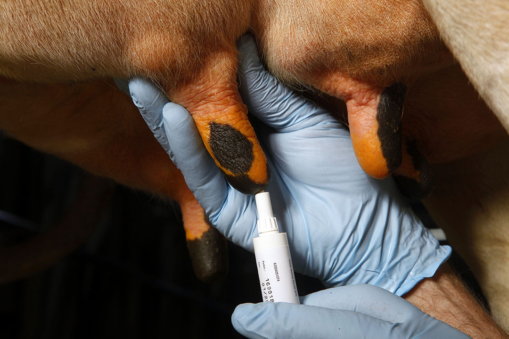
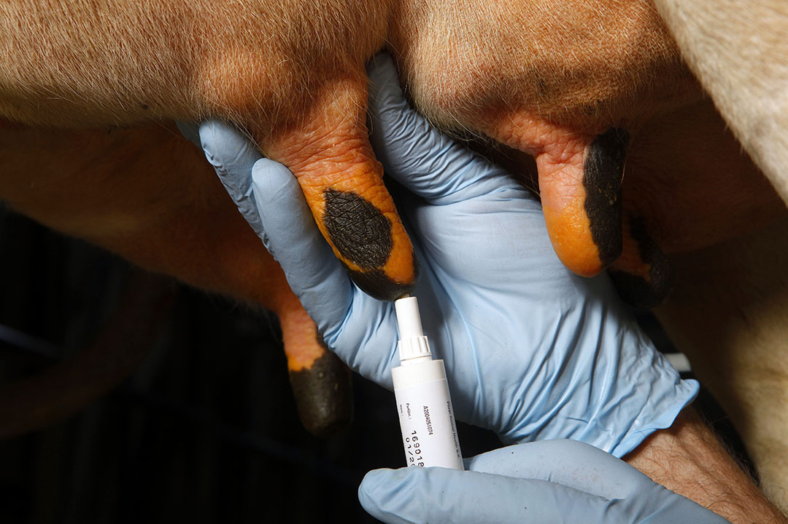
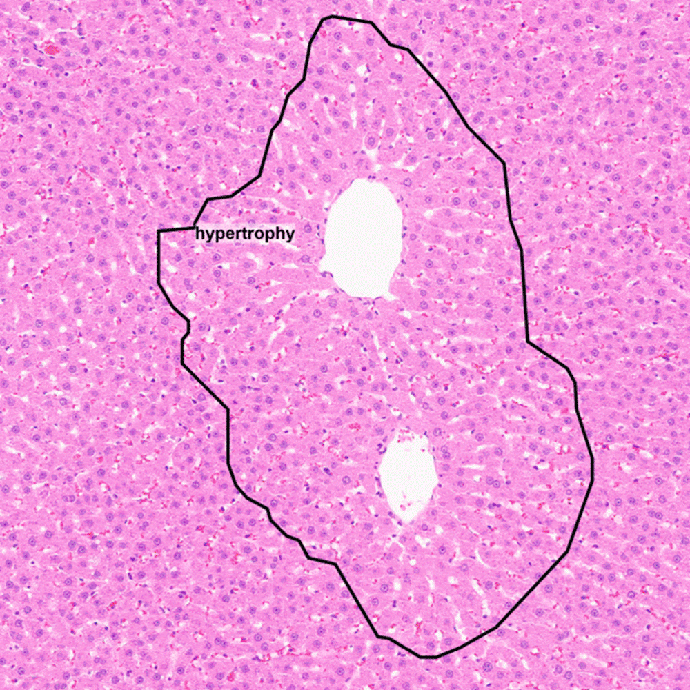
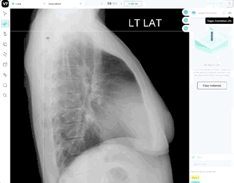

AI/ML Engineer with a M.S. in Artificial Intelligence, specializing in computer vision and NLP. Proven track record in impactful research and half a decade of entrepreneurship experience. Adept at developing innovative deep learning solutions, from cow health detection to chatbots.
Eager to apply expertise as an ML Engineer in the healthcare industry, contributing to transformative solutions and advancements.
 

Developed an end-to-end Mastitis detection system, fostering improved cow health for dairy farm agriculture and automating the manual assesment of cow teats. The system is hosted and freely accessible,
serves as a user-friendly tool for farmers, enabling proactive health monitoring in their herds.

PathoAgents is an advanced AI model tailored for virtual question-answering in pathology images.
It pioneers multimodal healthcare tasks, ensuring seamless deployment for practical healthcare applications.
This project significantly contributes to the progress of healthcare education and technology.

Implemented a GAN for lifelike cat image generation using PyTorch,
showcasing expertise in CNNs and image processing. Finely tuned the Discriminator for accurate image evaluation, highlighting proficiency in AI, ML, and neural networks.

Unveiled valuable insights from a cosmetics store's extensive 10 TB clickstream dataset utilizing AWS, EMR, Hadoop, HDFS, and Hive. Launched and optimized an EMR cluster in AWS,
employing techniques like dynamic partitioning in Hive for enhanced performance.
Delivered strategic recommendations on revenue generation and user behavior for informed decision-making.

Engineered a Sentiment Analysis project employing an LSTM-based RNN architecture in Python, leveraging TensorFlow and Keras, alongside word2vec.
The model, trained on a Twitter corpus dataset, achieved a commendable accuracy of 0.79.

Enhanced lung segmentation accuracy for improved cancer diagnosis and treatment planning. Developed a SegNet model with ResNet-101 backbone,
surpassing previous methods and achieving an IOU score of 81.5% and a Dice score of 93% through image segmentation with CNN PyTorch, OpenCV, and advanced medical imaging analysis.

Investigated Tacoma Narrows Bridge dynamics for safer designs through simulation using NumPy, Pandas, mathematical modeling, and differential equations.
Developed a simulation model with four first-order equations to analyze bridge behavior and understand structural failure causes.

Solving the forward kinematics problem of a two-dimensional Stewart Platform, this project models a manipulator with a triangular platform controlled by three variable-length struts. The goal is to compute the position (x, y) and orientation θ based on the variable lengths p1, p2, and p3 of the struts, crucial for real-time motion planning in applications like flight simulators.

Creating a logistic regression model for lead scoring, assigning values between 0 and 100. This score aids the education company in targeting potential leads, with higher scores indicating a higher likelihood of conversion.
Tailored for an education-focused approach, the model identifies the most promising leads on the company's website, optimizing the targeting of course sale.
Revolutionizing risk assessment for a Retail/Consumer Finance Company,
this project dives into identifying driving factors influencing loan defaults. Employing advanced analytics, we aim to create a robust portfolio risk assessment strategy. This project unveils the intricate process of leveraging data to mitigate the risk of financial loss while lending to customers.
Unveiled valuable insights from a cosmetics store's extensive 10 TB clickstream dataset utilizing AWS, EMR, Hadoop, HDFS, and Hive. Launched and optimized an EMR cluster in AWS,
employing techniques like dynamic partitioning in Hive for enhanced performance.
Delivered strategic recommendations on revenue generation and user behavior for informed decision-making.
Tableau
Crafting an Interactive IPL Statistics Dashboard
Developing an Immersive Tableau Dashboard for IFP News Agency's Sports Newsletter. Unleash the power of dynamic visualizations to explore comprehensive IPL statistics over the years.
This project, undertaken for a nationally recognized news agency in New Delhi, aims to create engaging infographics by blending interactive elements and personalized insights through filters and customizations.